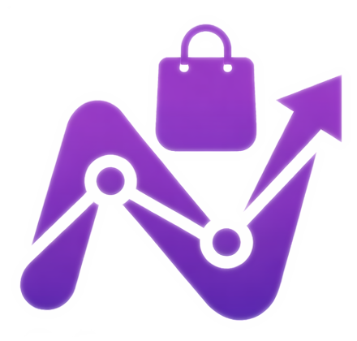
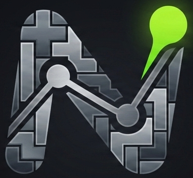

Un ecosistema robusto para controlar tus ventas, stock y finanzas. Software local, seguro y diseñado para la eficiencia diaria.

Estados automáticos: sin stock, bajo, crítico, normal y exceso.
Gestión completa de productos con precios, categorías y control.
Visualización clara del estado del inventario.
Alertas inteligentes para reposición de stock.
Solicitá la versión actual y te enviamos el instalador adecuado para tu equipo.

Interfaz optimizada para ventas rápidas con gestión de tickets e IVA.
Módulo exclusivo para campañas de Navidad, Reyes y fechas especiales.
Gestión de cuentas corrientes y fidelización de clientes habituales.
Control centralizado de compras, facturas y pagos pendientes.
Pedí la versión actual del sistema POS y recibí orientación para instalarlo.

Registro de ingresos y egresos con categorización.
Administración de múltiples cuentas (efectivo, banco, etc.).
Estadísticas y análisis financiero.
Planificación y control de gastos mensuales.
Solicitá la versión disponible para organizar cuentas, movimientos y reportes.

Interfaz retro-futurista con efectos neón y 3 temas visuales: Cyberpunk, Retro y Ocean.
Elige entre el modo Clásico o el intenso modo Contrarreloj (Time Attack) de 90 segundos.
Sistema de Hi-Score local y desbloqueo de logros como "Centurión" o "Racha Imparable".
Incluye pieza fantasma, reserva (Hold), sistema de combos y guardado automático de partida.
Jugalo online o descargá el archivo HTML para usarlo sin conexión.
Nuestros sistemas implementan estrictos protocolos de seguridad unificados. Todos los módulos funcionan de forma local y offline, garantizando que tus datos te pertenezcan siempre.
Encuentra respuestas rápidas a tus dudas sobre Nexar Sistemas.
Nexar Sistemas se destaca por su enfoque en la privacidad y el control de datos. Todos nuestros módulos funcionan de forma local y offline, lo que significa que tus datos nunca abandonan tus instalaciones y no dependes de una conexión a internet para operar. Esto garantiza máxima seguridad y soberanía sobre tu información.
Sí, la seguridad es una prioridad. Al funcionar de forma local y offline, tus datos están protegidos dentro de tu propio entorno, reduciendo drásticamente los riesgos asociados a la nube o a servidores externos. Implementamos estrictos protocolos de seguridad y usamos tecnologías robustas como SQLite, Python y Flask.
No, esa es una de nuestras principales ventajas. Todos los módulos de Nexar Sistemas están diseñados para funcionar completamente offline. Solo necesitarás conexión a internet para actualizaciones del software (si decides realizarlas) o para contactar con soporte.
Nexar Almacén te ofrece un control total del stock con estados automáticos (sin stock, bajo, crítico, normal y exceso), gestión completa de productos con precios y categorías, reportes claros del inventario y alertas inteligentes para reposición automática, asegurando que siempre tengas lo que necesitas.
Nexar Tienda está diseñado para una amplia variedad de comercios. Incluye un Punto de Venta optimizado para ventas rápidas, gestión de temporadas (Navidad, Reyes), cuentas corrientes para clientes habituales, y control de proveedores, facturas y pagos.
Nexar Finanzas te permite registrar detalladamente todos tus ingresos y egresos, administrar múltiples cuentas (efectivo, banco), generar reportes y análisis financieros para una visión clara de tu negocio, y planificar presupuestos mensuales.
Nexar Tetris es nuestra propuesta de entretenimiento: un juego retro-futurista con múltiples temas, modos Clásico y Contrarreloj, sistema de logros y mecánicas avanzadas. Puedes jugarlo directamente aquí en tu navegador o descargarlo para jugar offline.
Completá el formulario y te respondemos por WhatsApp a la brevedad.